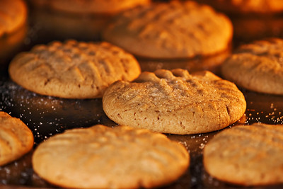

Home
Peanut Butter Cookies

"Peanut Butter Cookies" by Bryan Schwenk.
Licensed under CC BY 2.0.
Description
Peanut butter cookies are rich, sweet baked treats made with peanut butter as their main flavor and structural ingredient.
Ingredients
- 1 cup peanut butter
- 1 cup whit sugar
- 1 egg
Steps
- Gather the ingredients, preheat the oven to 350 degrees F (175 degrees C). Line baking sheets with parchment paper.
- Mix peanut butter, white sugar, and egg in a medium bowl until smooth.
- Roll mixture into 1-inch balls and place 1 inch apart on an ungreased baking sheet; flatten each with a fork, making a criss-cross pattern.
- Bake in the preheated oven until cookies are just barely brown on the bottoms, about 6 to 8 minutes.
- Serve and enjoy!